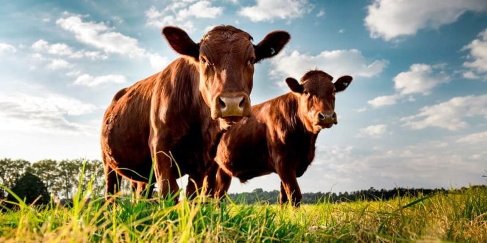
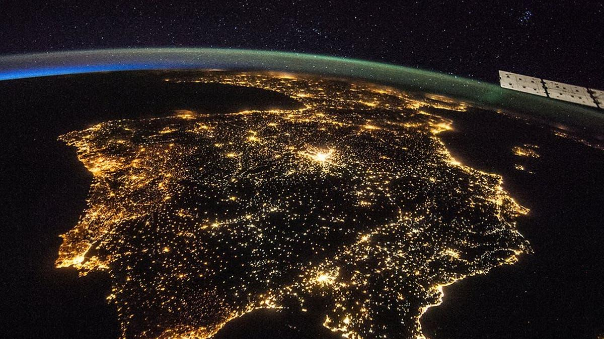
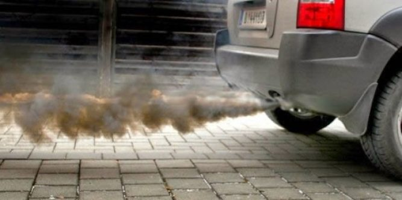

Hablamos de contaminación cuando en un entorno ingresan elementos o sustancias que normalmente no deberían estar en él y que afectan el equilibrio del ecosistema
Existen 3 tipos de contaminación:
Contaminación atmosférica o ambiental. Consiste en la liberación de sustancias químicas a la atmósfera que alteran su composición. Supone un grave riesgo para la salud de todos los seres vivos.
Contaminación hídrica o del agua. Se debe a la presencia de desechos en el agua. La contaminación de mares, ríos y lagos se produce por las actividades del ser humano y es foco de infecciones.
Contaminación del suelo. Como los dos anteriores tipos de contaminación, se debe a la acción humana (los residuos y la basura arrojada en cualquier superficie terrestre).
Los gases de efecto invernadero (GEI) se producen de manera natural y son esenciales para la supervivencia de los seres humanos y de millones de otros seres vivos ya que, al impedir que parte del calor del sol se propague hacia el espacio, hacen la Tierra habitable. Después de más de un siglo y medio de industrialización, deforestación y agricultura a gran escala, las cantidades de gases de efecto invernadero en la atmósfera se han incrementado en niveles nunca antes vistos en tres millones de años. A medida que la población, las economías y el nivel de vida —con el asociado incremento del consumo— crecen, también lo hace el nivel acumulado de emisiones de ese tipo de gases.
Existen tres hechos en que los científicos inciden y que son de enorme utilidad para entender mejor la raíz y la escala del problema:
la concentración de GEI en la atmósfera terrestre está directamente relacionada con la temperatura media mundial de la Tierra;
esta concentración ha ido aumentando progresivamente desde la Revolución Industrial y, con ella, la temperatura del planeta;
el GEI más abundante, alrededor de dos tercios de todos los tipos de GEI, es el dióxido de carbono (CO2) que resulta de la quema de combustibles fósiles.
Un informe de la onu indica que limitar el calentamiento global a 1,5°C requeriría transiciones "rápidas y de gran calado" en la tierra, la energía, la industria, los edificios, el transporte y las ciudades.
Incendios Forestales
"Los incendios forestales arrasan con gran parte de especies a lo largo del mundo, cada vez más bosques desaparecen debido a la quema de árboles justificada y no justificada. Va desde los incendios provocados por basura la cual refracta la luz iniciando un incendio hasta la quema de árboles para la limpieza de terrenos para viviendas y ocupación ganadera, dejando así miles de especies importantes para el ecosistema, como las abejas, entre otras sin hogar y en situación de peligro de extinción. El humo de los incendios es también uno de los contribuyentes al efecto invernadero y la contaminación por humo."
Contaminacion por ganadería

La ganadería abarca muchos tipos de contaminación, tales como: la deforestación, la escasez del agua, la degradación de suelos, la sobrepesca y la emisión de gas metano contribuyendo así con el efecto invernadero. El exceso de animales para la ganadería hace que halla cúmulo de gas metano el cual es emanado por el ganado, los árboles son talados o incendiados para hacer lugar al mismo, los animales criados para consumo necesitan de demasiada agua, una vaca puede consumir 38 y 110 litros de agua por día, lo cual es un riesgo considerando los recursos de agua actuales los cuales son críticos.
Contaminacion por Basura
A día de hoy existen islas de basura debido al cúmulo de la misma a lo largo de todo el mundo, los peces en el mar así como los arrecifes de coral han disminuido de manera alarmante, los pescadores comúnmente sacan toneladas de basura de sus redes debido al exceso de la misma en los mares. Según los estudios, ingerimos 5 gramos de plástico a la semana, el equivalente a una tarjeta de crédito. Se calcula que el plástico demora entre 100 y 1000 años en descomponerse, y al ritmo en el que este es producido y desechado el nivel de plástico en los distintos ecosistemas solo crece cada año.
Contaminacion Luminica

La contaminación lumínica corresponde a la alteración de la oscuridad natural de la noche, provocada por luz desaprovechada, innecesaria o inadecuada, generada por el alumbrado de exteriores, la cual genera impactos en la salud y en la vida de los seres vivos.Aumenta la mortalidad en especies nocturnas por debilitamiento de la vista y exposición a depredadores.El impacto que tiene este despilfarro energético acelera considerablemente el cambio climático, ya que en los procesos para producir toda esta energía se expulsan toneladas de CO2 a la atmósfera
Contaminacion por humo

Entre las principales causas de la contaminación vehicular del aire, los productos de las emisiones vehiculares que son depositados en la atmósfera en mayor cantidad son:
Óxidos nitrosos, Monóxido de carbono (CO), Dióxido de carbono (CO2),Compuestos de plomo, Pequeñas cantidades de dióxido de azufre, sulfuro de hidrógeno y amianto.
Todos estos gases contaminantes son producidos durante el proceso de combustión interna de combustibles fósiles (gasoil, gasolina y sus impurezas) que se da en los motores de los vehículos.
Contaminacion por Petroleo
Cuando los animales entran en contacto con el petróleo, este se impregna en su superficie y, por su viscosidad, les impide trasladarse en el agua, volar en el caso de las aves, e incluso comer. Por este motivo, muchos animales mueren por la toxicidad del petróleo y, además, por el hecho de haber estado en contacto con el petróleo, a largo plazo, los animales pueden resultar infértiles.
los ríos son una fuente de agua dulce de los cuales las poblaciones se sustentan. Un derrame de petróleo en un río puede dejar sin acceso a agua potable a una gran cantidad de personas